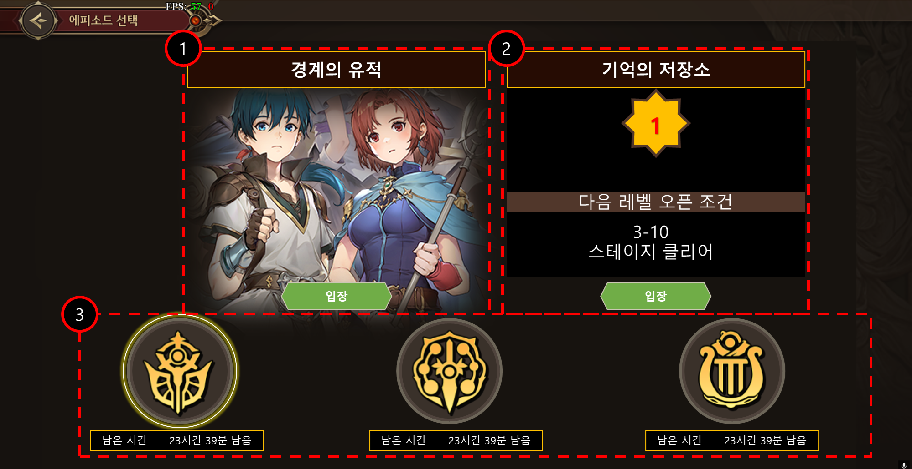
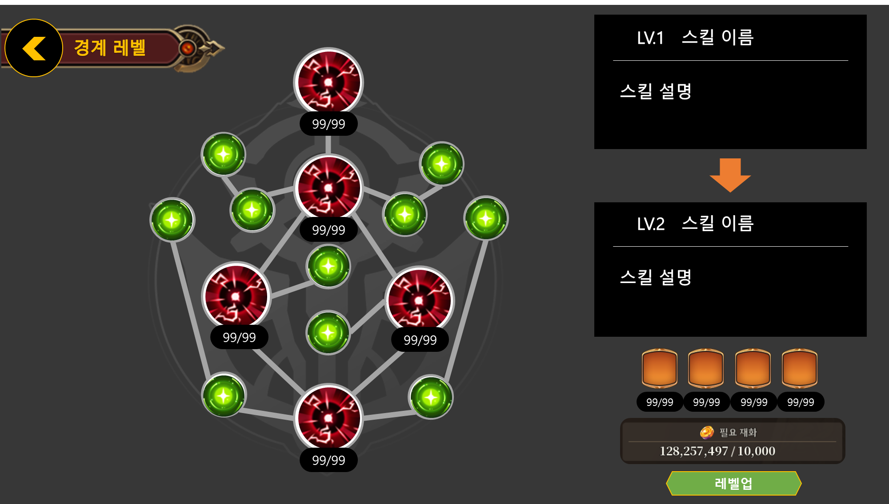
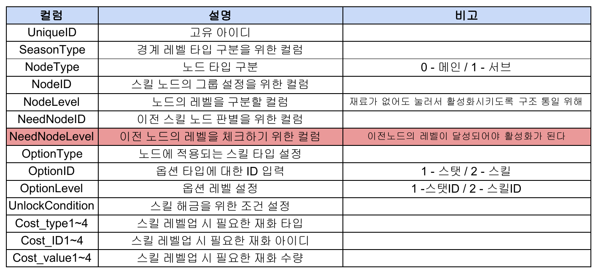

시즌별 도전과 성장을 연결한
기억의 경계
시너지 스톤의 주요 파밍처인 ‘경계의 유적(기억의 경계)’을 도전과 반복 플레이가 이어지는 콘텐츠로 설계했습니다. 시즌마다 참여 가능한 에피소드 영웅을 구분하고, 스테이지 진행에 따라 반복 던전과 전용 성장을 열어 주는 구조입니다.
스테이지 도전 → 기억의 저장소에서 재화 획득 → 성장 노드 강화 → 다음 난이도 도전으로 이어지는 순환 구조를 정의했습니다.
SEASON시즌마다 달라지는 편성
시즌에 맞는 대륙과 에피소드 영웅으로 팀을 구성합니다. 스테이지는 순서대로 진행하고, 시즌이 끝나면 진행 상태와 전용 성장을 초기화하도록 정의했습니다.
PROGRESSION도전이 반복 플레이를 확장
스테이지 진행에 따라 ‘기억의 저장소’를 개방·확장합니다. 반복 플레이로 얻은 재화를 전용 성장에 사용해 다음 도전을 준비하게 했습니다.

시즌과 콘텐츠 진입 화면기획서의 화면 시안입니다. 시즌 상태와 참여 영웅의 범위를 보여 주고, 스테이지 도전과 반복 던전의 진입을 구분했습니다.성장 조건을 화면 상태로 표현
성장 노드마다 선행 노드와 필요 재료를 정의했습니다. 재료가 부족하면 비용을 붉게 표시하고 버튼을 비활성화하며, 잠긴 노드는 선행 조건을 안내하도록 구성했습니다. 시즌 초기화 규칙과 함께 성장 단계·버프·비용을 데이터로 연결했습니다.

전용 성장 노드와 비용 표시노드 선택, 선행 조건, 활성화·강화 비용을 한 화면에서 확인하도록 구성한 성장 UI 시안입니다.테이블 구조 설계 · 시즌, 스테이지와 성장 노드
StageSchedule에서 시즌 스케줄을 관리하고, ContentsHeroDeckIndex와 ContentsPlayHeroTID의 DeckIndex·PlayHeroGroupID로 에피소드별 덱과 사용 가능한 영웅을 구분했습니다. StageTemplate에서는 챕터·스테이지·기억의 저장소를 타입으로 나누고 시즌과 개방 조건을 설정했습니다.
전용 성장에는 신규 MemoryLevelTemplate을 정의했습니다. 시즌·노드·레벨을 구분하고, 선행 조건과 적용 효과, 소비 재료를 컬럼으로 구성했습니다.
MemoryLevelTemplate의 주요 컬럼| 구분 | 주요 컬럼 | 설계 내용 |
|---|
| 노드 식별 | UniqueID
SeasonType
NodeType
NodeID / NodeLevel | 시즌별 성장 트리를 구분하고, 메인·서브 노드와 각 노드의 성장 레벨을 정의합니다. |
|---|
| 선행 조건 | NeedNodeID
NeedNodeLevel
UnlockCondition | 선행 노드와 요구 레벨, 별도 해금 조건을 설정해 노드 활성화 순서를 연결합니다. |
|---|
| 적용 효과 | OptionType
OptionID
OptionLevel | 노드의 효과 타입과 대상 효과 ID, 적용 레벨을 정의합니다. |
|---|
| 소비 재료 | Cost_type1~4
Cost_ID1~4
Cost_value1~4 | 재화 타입·아이디·수량을 한 묶음으로 구성해 활성화·강화에 필요한 재료를 설정합니다. |
|---|

기억의 경계 성장 노드 컬럼 정의선행 노드의 ID와 요구 레벨, 효과와 비용을 구분한 기획서의 원본 테이블 정의입니다.기획 범위시즌 스케줄, 영웅 편성 제한, 스테이지·반복 던전, 성장 노드와 보상 규칙을 정의하고, 로비·스테이지·성장 UI 및 데이터 테이블로 구체화했습니다.